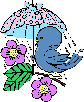
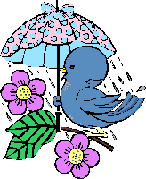

The Toast Point Limerick Contest!
Squeaky-Clean Entries from October, 1997
Few and Far Between
Tonight I'm a witch and I'm ready to leave,
I'm going trick or treating on All Hallow's Eve.
I'm gonna' have fun and I'm not gonna' get scared,
And all this candy I get, it's not gonna' get shared!
But the downside is that all the candy I get, I will have to heave!
There once was a farmer from Maine
Who left his cat out in the rain;
It snarled and hissed,
It really was pissed,
It chased field mice INTO the grain!
In Paris, a man named Jerome
Works in subways real close to his home.
He's like a dwarf, too,
At four foot and two,
And most people say, "Metro gnome."
 There's a question designed to perplex:
There's a question designed to perplex:
Why giraffes have such very long necks!
Is it mainly to see?
Or eat treetops for tea? ...
Or have more room in dating for pecks?
Crispy writes 10/29/97
My heart isn't made of dark stone,
And I don't speak in very harsh tone,
But I think it'd be neat,
When kids trick or treat,
If they'd please leave my mailbox alone!
It ain't nice to get kid's hopes dashed,
We've oodles of giveaways stashed,
Halloween's fun
Save for "Peeve One",
Getting my mailbox all smashed!
The poet comments, "Happy Halloween, Eric!"
Thanks, Chris! Hope you've been well!
Chaplin Coleman writes 10/29/97
There once was an old sow
Who wanted to marry a cow
But his own kind
Bit him on the behind
And he's six feet under now!
There was a pudgy cat
Who sat on a little rat
The rat was squashed
The spot could not be washed
Now it's under a floor mat!
On the southern tip of Africa lies Cape Town.
Many people think it's a great town,
But take away the sea
And what would it be?
Nothing but a silly old _ape town.
The poet comments, "This one works better when you hear it than when you read it. In written
form the pun C/sea doesn't work so well."
My advice, just forget that it's fun
To think that you could be the one
That this country needs
To do its misdeeds,
And then change your plans and don't run.
I scooped out the flesh of a pumpkin
I carved on the face of a bumpkin
Went disguised to my folks ...
They at once saw my hoax ...
Moral: try as you might, you can't stump kin!
The World Series ends in Miami
Those Florida Marlins are jammy!
They just squeak to a tie
On a sacrifice fly
But in OT, sock Cleveland a whammy!
PJ :) writes 10/25/97
There once was an Internet spamster
Who was told,"You're really a tramp, Sir!
With your morals decayed,
Millions of ads you have laid...,
We curse you with ill to be damned, Sir!"
Halloween's when ghosts party together
Scaring witches and cats in bad weather
The witch howls, the cat mews
Ghosts get high on their boos
And return home dead drunk to the Nether.
There's a new phrase I wish would go dance -
I would ban it, given just half a chance
So, if you ask me a favor
Be a gratitude saver -
Don't bug me with "thanks in advance"!
The poet comments, "Sound familiar? The version I submitted on 10/20 had two really dud
middle lines (so bad, apparently, you changed "favor awaiter" to "favor a waiter" in a futile
attempt to make sense of them) ... so I've changed them."
Definitely an improvement, although "go dance" is still a stretch...
Al Willis writes 10/25/97
It is said Mr. Gore is a bore.
His drone causes many to snore.
All those Sammies and Tammies
Get into their jammies,
And some fall asleep on the floor.
There once was a hacker named Cyrus
Whose computer developed a virus.
To get some surceases,
He chopped it to pieces
And went back to using papyrus!
Alby writes 10/24/97
A squeaky clean limerick you ask?
For me this could be quite a task!
But I'll try to conform
And hope you don't yawn
At the boring mind-numbing remarx!
The poet comments, "well what do you expect from a first timer!"
My experience is quite undeniable
You see I have none and that is why-able
I will try to improve
And practice my move
From basic to experienced limerickables!
The poet comments, "i dont think this earns the right to a comment ...does it?"
Ooo, Alby, you do so well, and then your 5th line rhyme falls flat. Keep plugging away,
kid!
Mathman writes 10/24/97
Baseball caps are made for clinging
When after fly balls you're winging.
But worn indoors?
Only by boors
And those with a poor upbringing!
I'll admit that I'm now over thirty.
And some folks have said that I'm nerdy.
I don't mind it a bit,
But I will not admit
That my underwear ever is dirty.
My best friend is always clean
Too bad she's sometimes mean
I wish she was nice
Even to little mice
Maybe I can change my name to Sheen!
The poet comments, "I just want to say that in the limerick,when it say "Maybe I can change my
name to Sheen" it means I'm too humilated to be seen with her. "
Anonymous writes 10/24/97
Now Hillary's known as a leader
And Slick Willy's salary feeds her
Clinton runs around
Hillary wears no frown
Where are the morals of Peter?
There's a bug in Excel, quite a beaut
It can sum and subtract and square-root
But when I'm dividing
By more, than providing
The answer is always a noot
The poet comments, "Another Accolade for Bill !"
Berko writes 10/23/97
A boring little creep called (PM) John Howard
Was a bit of a moral coward
And because of this
Australia hurled to the abyss
With its people no longer empowered
This wee bonnie Irish young lass..
Drank alone in a pub, alas!
Enter young Finnigan,
Promised he'd make her grin!
And I'm sure you can all guess the rest!
The poet comments, "*LAUGHS at her horrid limerick!* hope you all enjoy a good laugh at it
yerselves!"
PJ :) writes 10/23/97
There once was a hacker named Cyrus.
Who entered a web-page of Myra's
He looked all about,
But when he got out...
Cyrus had caught Myra's virus!
I'm not a believer in fate
But if Gates were to reincarnate
He'd return as a nun,
Attila the Hun,
Or as Alexander the Grate!
At school I was sometimes befuddled
My grades most got halved and not doubled
My Inglish you see
Was my downfall from 3
'Cause my words I got always up muddled
The poet comments, "Put that in your smoke and pipe it !"
There's a Nip in the air , luv, tonight
Make sure that you turn off that light
If he sees yon faint glint
He'll do Kam'kazi stint
Then the night won't be dark, 'twill be bright!
Anonymous writes 10/22/97
There once was a girl from Nigeria
Who loved to eat foods with fiberia.
She ate cabbage and prunes,
And lots of legumes,
But her family now lives in Siberia!
The poet comments, "I'm in heaven now that I've found this site!!!! I've got lots more!!!!!"
The leaves crunching under my feet
Mean it's time that I swept the concrete.
I will sweep it, and then
'Twill be covered again ...
It's a full time job, keeping yards neat!
The trouble with meteorology
Is nowadays blamed on chaology:
Last week, butterfly-wing flaps ...
Today, surprise thunder claps
And weather forecasters' abject apology!
There once was a fella called Jackson
Who was brilliant at loafin' and relaxin'
But it was a great loss
For his every boss
Was even better at firin' and axin'!
PJ :) writes 10/21/97
Hickory Dickory Bill
Wants to be King of the Hill
To be the main one
Of the browsers we run...
[Can he really get richer STILL?]
Jeremy J. Diamond shares classics 10/21/97
There once was a man named Crocket
Who put his foot in a socket
When along came a witch
Who turned on the switch
And Crocket went up like a rocket
Way down south where bananas grow
A grasshopper stepped on an elephant's toe
The elephant said with tears in his eyes
Pick on someone your own size!
I asked my mom for 25 cents
To see the elephant jump the fence
He jumped so high
He reached the sky
And never came back till' the forth of July!
On the shores of the River Euphrates
Lounge the scores of lascivious ladies
Who, prior to this
Stark metamorphosis
Subserved to the frigid 1980's!
PJ :) writes 10/20/97
There's a nip in the air, love, tonight.
The moon is above, to the right.
The trees are a-swaying,
A love song I'm playing...
Please don't say you won't, say you MIGHT!
Putting all prejudice aside,
And resisting attempts to divide,
I have now discerned
The tide has now turned,
And racism equals Black Pride.
There's a new phrase I wish would go dance
I would ban it, given just half a chance
So, you favor a waiter,
Save your gratitude for later ...
Don't bug me with "thanks in advance"!
Anonymous writes 10/20/97
Hooray! Christmas is finally coming!
The drummer boy has started his drumming,
The presents are unwrapped
and we have finally sat,
For the turkey dinner is coming.
Anonymous shares a classic 10/20/97
There was a young lady of Niger
Who smiled as she rode on a tiger.
They returned from the ride
With the lady inside,
And a smile on the face of the tiger!
I'm using a small rhyming dictionary
It helps with my poems, but not Pictionary
It simply was made
For my rhyming to aid
>From classics, to modern, to fictionary.
2 out of 3 ain't that bad
Of my weekend predictions I had
The Sun, it did shine
The rugby was fine
Just the Lotto that makes me feel sad!
PJ :) writes 10/18/97
It is said Mr. Gore is a bore.
To converse with him: Really a chore.
But "Hilly" and "Billy"
Can talk a man silly!
For "Gore Bore": I'd go for some more!
Robyn writes 10/17/97
There are leaves crunching under our feet
Oh autumn, it just can't be beat.
The chill wind it blows
And everyone knows
That soon twill be winter we greet!
The photo was made with panache.
The phellow who made it had dash.
The camera was philled
With philm, and I'm thrilled.
There was no need to set off the phlash.
PJ :) writes 10/17/97
Mr. Willis invited me here.
I find it's a land of good cheer!
The lim'ricks are clean;
Atmosphere is serene...
Thanks Al! Can I buy you a beer?!
Al gets a kickback for each sucker he lures in, y'know.
Two critics called Ebert and Siskel
Are giants in film matters fiscal.
If they up their two thumbs,
A huge audience comes -
If they down them, a movie may risk all!
There once was a bloke from Down Under
Whose marriage had been torn asunder
By his penchant to bite
Every earlobe in sight
And his neighbor's wife's claim he'd undone her!
I think that this Contest should end
It's driving me up 'round the bend
But what makes it worse
Is wrestling with verse
And words that I can't comprehend !
The poet comments, "I don't really - It's a great Contest !"
Why, thank you!
In reply to Professor MG
I'll explain now the "wuss" word to thee
Like nEither or neIther
It's Either or eIther
And short for le French BourgWUSSie!
The pen name I use is Rick Limer
And I'm not a poetic sublimer
But I'd rather be vexed
With conventional text
Than perplexed by a sordid five liner!
In the White House, there's some tattletale
Who is selling some lies by retail.
As I entered the room,
I did smell perfume,
But I left, and I didn't inhale!
A fugitive called Paddington Bear
Once escaped to west London by air
Where the Browns were all conned
By a shrewd Michael Bond
To provide him with permanent care!
"If they're getting too old, let's retire some."
And if they won't go, let's fire some."
"But we can't cut and run;
The work won't get done."
"If we need personnel, just hire some."
The poet comments, "Sounds like Dilbert's cartoon."
Buck writes 10/10/97
All Willis is good, I'll agree
And you can't top Professor M G
I'm all for competing
But better at pleading
Hey guys, leave some gold stars for me!
The poet comments, "there's some stiff competion in here :)"
There's one to start you off...
With all that's been done for the game
My golf score is still much the same
The sad part for me
Is that technology
Has left me with nothing to blame!
So you can advance if you choose.
As for me, I flat out refuse.
I'll use the old stuff
As I hack through the rough
But at least I'll still have an excuse!
Dave So writes 10/09/97
In a park by the sea, I spent my day
Escaping their tired and hectic ways
I rolled down a hill
And jumped in some leaves
And that's all I ever want to be!
No matter if male or if female
Folks moaned of the slowness of seamail
But no gain's without pain
Now folks often complain
Of how quickly you get things by email!
Galactose, Fructose, and Sweet
Were producers who couldn't be beat.
Their profits, now naught;
Competition (a lot),
From Maple, Cane Sugar and Beet.
At first I was nice, and I hoed 'em.
And once I agreed to explode 'em.
With those dandelions,
You can make vintage wines,
But I said, "Oh, hell," and I modem.
The poet comments, "A little computer pun."
There's a new word I see, but can't suss
Does one say it like puss, or like fuss?
Tell me, what does "wuss" mean?
Is it dirty, or clean?
Is it nasty or nice, or a cuss?
Buck writes 10/03/97
There's a question designed to perplex -
Our language should be less complex!
I get so confused
When trying to choose
Between writing "affects" or "effects".
The poet comments, "I hope this one "affects" the judges positively. A gold star would have a
positive "effect"!!! By George - I think I've got it!!!"
Yes you do, but...no you don't.
Dbutt writes 10/02/97
A vampire, who, sadly, wore braces
Tried to keep reign on his chases.
With wily persistence
For dental assistants
He left most unusual traces!
A tenor by name Pavasaurus
Joined a choir in old-fashioned chorus
They covered a classic
From a era Jurassic
That shook all the earth 'neath 'n 'forus
Dyslexia for me Rules O.K !
With it I'm completely au fait
Though I sometimes concede
It's inclined to impede
All I rede, all I ryte, All I sey !
I get discounts on my monthly web page bill if I display this button. I get
even more money off if you click the button - try it and see!